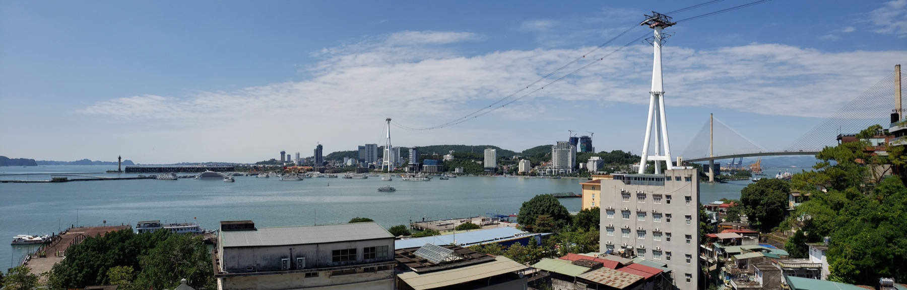
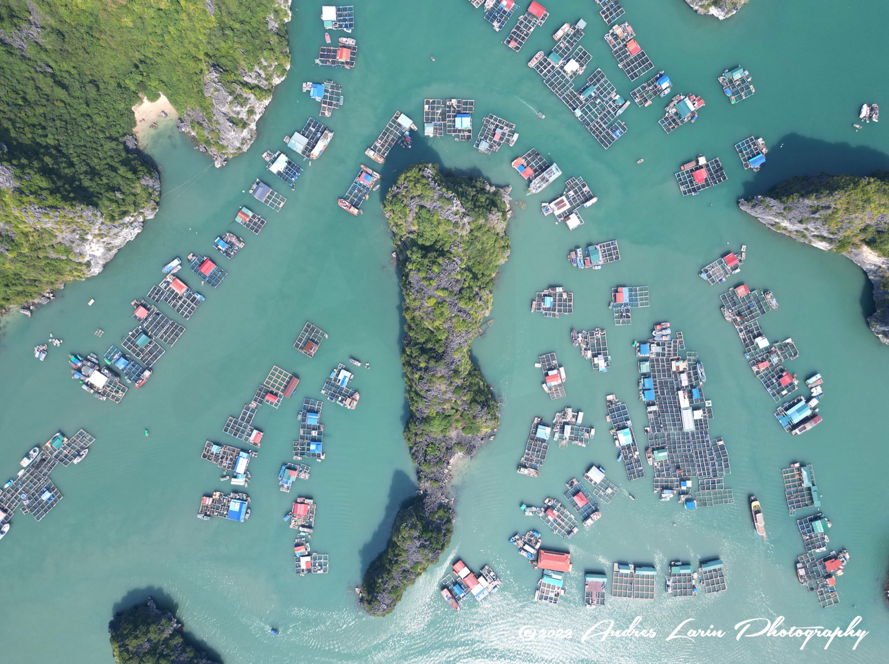
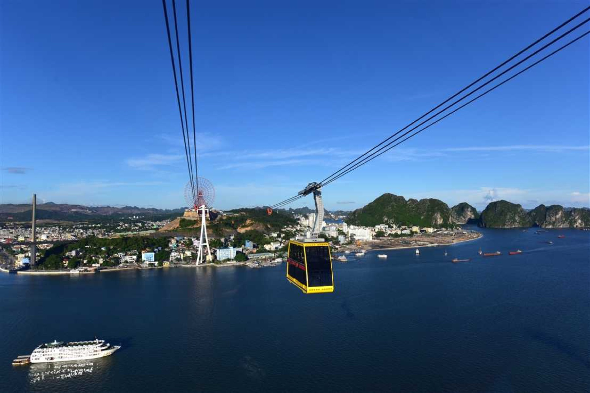
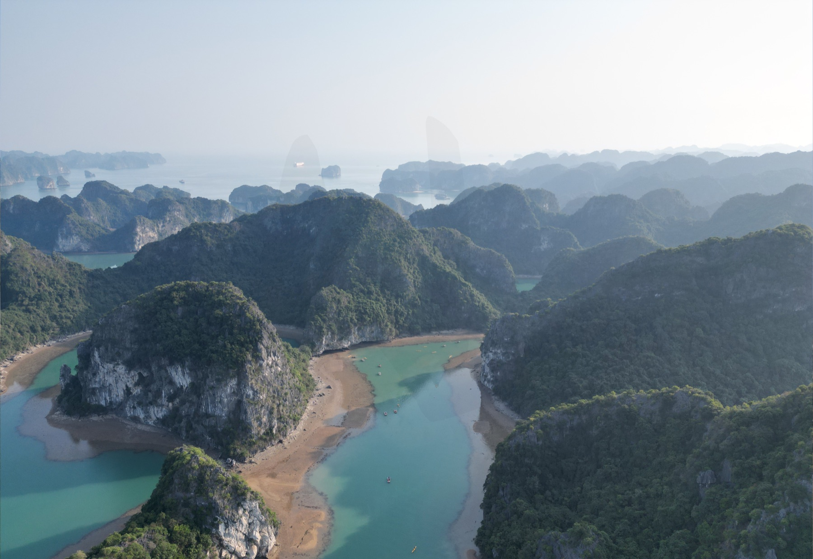

一天抓一個主要重點，其他時間留給交通、洗澡、放空和臨時想吃的東西。
兩晚都以 Wyndham Garden Legend Halong 為中心，移動路線比較單純。
早餐以飯店為主，午餐吃海鮮或簡單解決，晚上安排海邊氣氛。
DAY 1
2026/09/04（五）
河內出發／入住 Wyndham／Bãi Cháy Beach／Valley Beach Club
第一天先不要急著排太滿。從河內出發到下龍灣後，先把行李放好、把自己整理舒服， 下午去海邊玩水，晚上就直接去 Valley Beach Club，吃飯、拍照、看海邊氣氛。
TODAY
今天的重點：先抵達，先放鬆
抵達飯店後先不趕行程，留一點時間洗澡和休息。這天最重要的是把旅遊模式打開， 晚上在 Valley Beach Club 慢慢收尾就好。

10:00
從河內出發前往下龍灣
14:00
抵達 Wyndham Garden Legend Halong，放行李或辦入住
15:30-17:00
Bãi Cháy Beach 玩水
17:00-18:00
回飯店洗澡、休息
18:15-21:30
Valley Beach Club 晚餐、拍照、喝飲料、看海邊氣氛
21:30-22:00
回飯店休息
餐食
早：河內出發前簡單吃
午：路上或抵達後簡單解決
晚：Valley Beach Club
住宿
Wyndham Garden Legend Halong
兩晚都住同一間，行李不用每天整理，會輕鬆很多。
DAY 2
2026/09/05（六）
Hồng Hạnh 8 午餐／Vincom Plaza／Cabi Beach Club
第二天就把節奏放在「吃好一點、躲一下熱、晚上再出去」。中午吃海鮮， 下午到 Vincom 吹冷氣，傍晚回飯店整理，晚上再去 Cabi Beach Club。
TODAY
今天的重點：午餐好好吃，晚上好好坐
這天不用把景點塞滿，讓午餐、休息和晚上氣氛自然接起來。下午回飯店補一下體力， 晚上出門狀態會比較好。

10:20
從 Wyndham 出發
11:00-12:30
Hồng Hạnh 8 午餐
12:40-14:45
Vincom Plaza Hạ Long 逛街、吹冷氣
14:45-15:20
回 Wyndham
15:20-17:10
洗澡、換衣服、休息
17:30-18:00
從 Wyndham 前往 Cabi Beach Club
18:00-22:00
Cabi Beach Club 晚餐、拍照、看海邊氣氛
22:10
回 Wyndham 休息
餐食
早：飯店早餐
午：Hồng Hạnh 8
晚：Cabi Beach Club
住宿
Wyndham Garden Legend Halong
晚上回同一間飯店，路線單純，隔天退房也比較好掌握。
DAY 3
2026/09/06（日）
Queen Cable Car／退房／返回興安省 Ân Thi
最後一天以回程為主，早上如果精神不錯就去搭 Queen Cable Car。 中午前把行李拿好，11:30 前離開下龍灣，目標是 16:00 前抵達 Ân Thi。
TODAY
今天的重點：不要趕，準時回去
回程日最怕時間壓太緊，所以早上的活動抓短一點。只要身體覺得累， 就把纜車改成下次再來，提早出發也完全可以。


07:30
早餐
08:45
退房或寄放行李
09:00-10:15
Queen Cable Car
10:40
回 Wyndham 拿行李
11:00
最晚退房
11:15
簡單吃飯或外帶點心
11:30 前
出發返回興安省 Ân Thi
14:30-15:30
預計抵達 Ân Thi
16:00 前
返回 Ân Thi
餐食
早：飯店早餐
午：簡單吃飯或外帶點心
晚：抵達 Ân Thi 後再安排
住宿
退房日，不續住下龍灣
拿好行李後返回興安省 Ân Thi，今天重點是準時抵達。